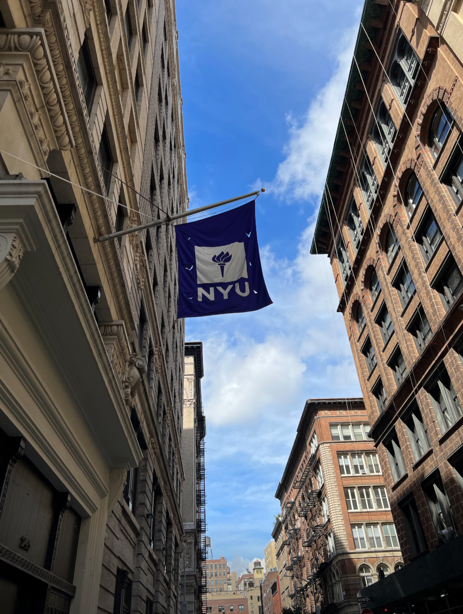
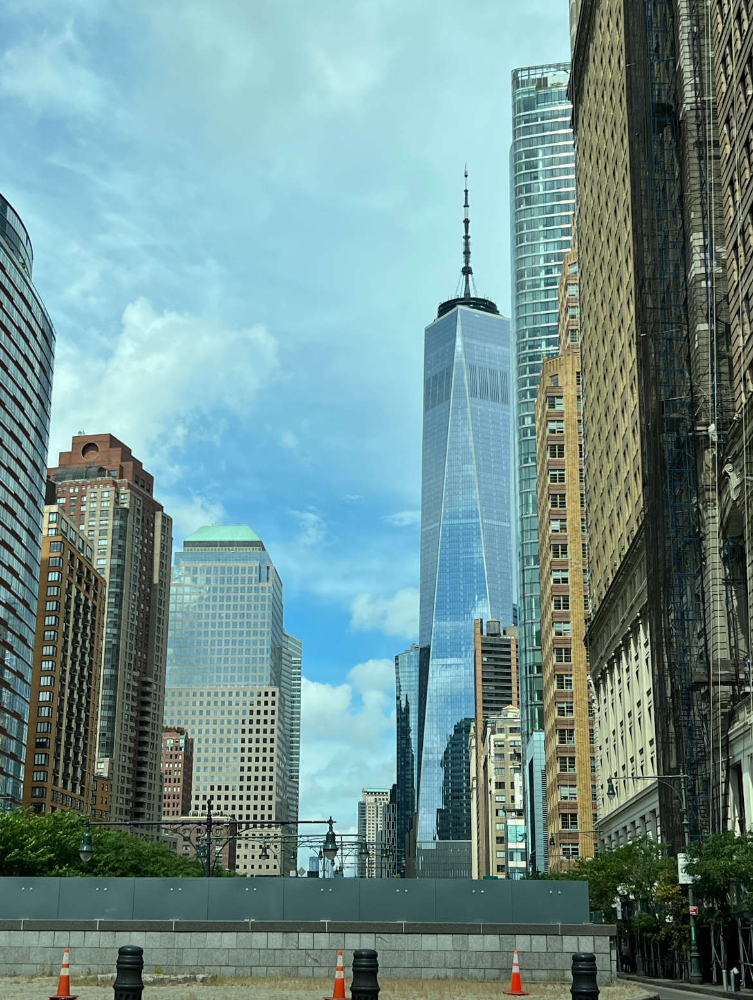
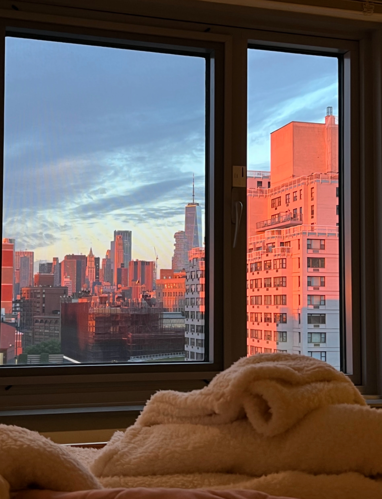
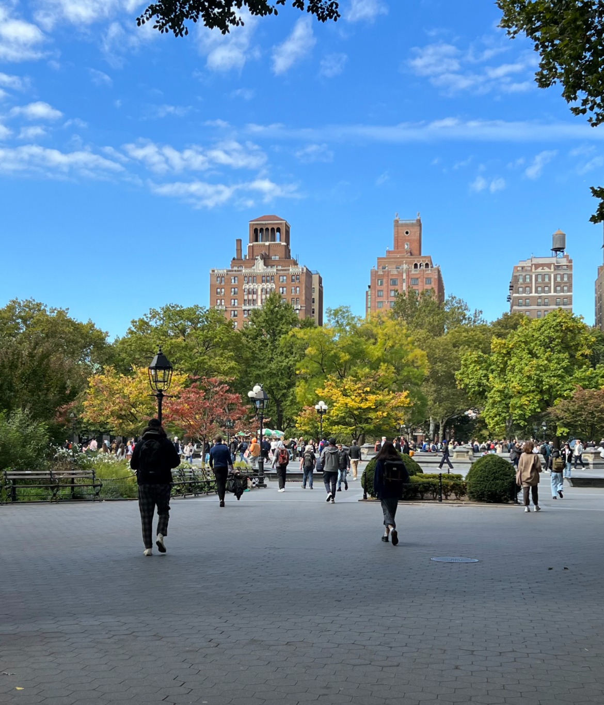
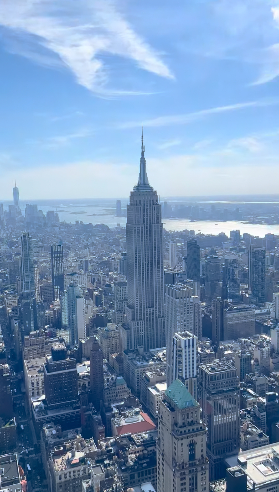
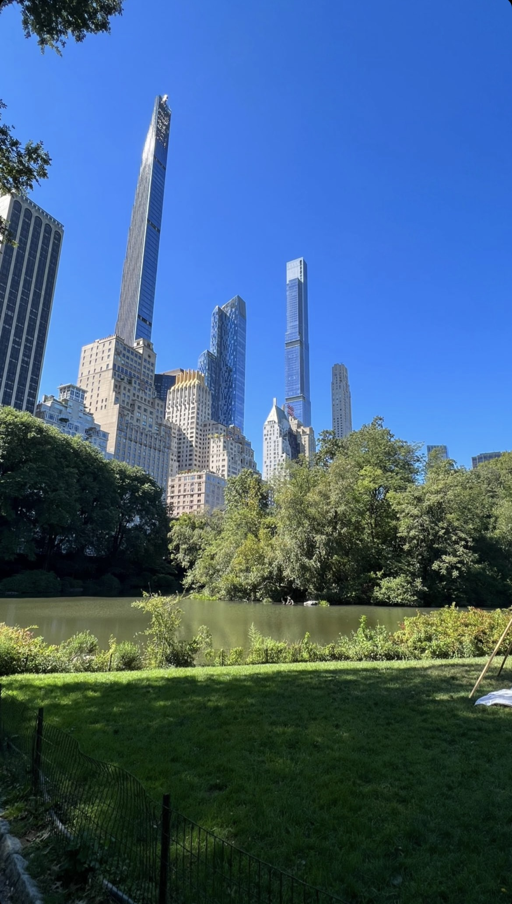
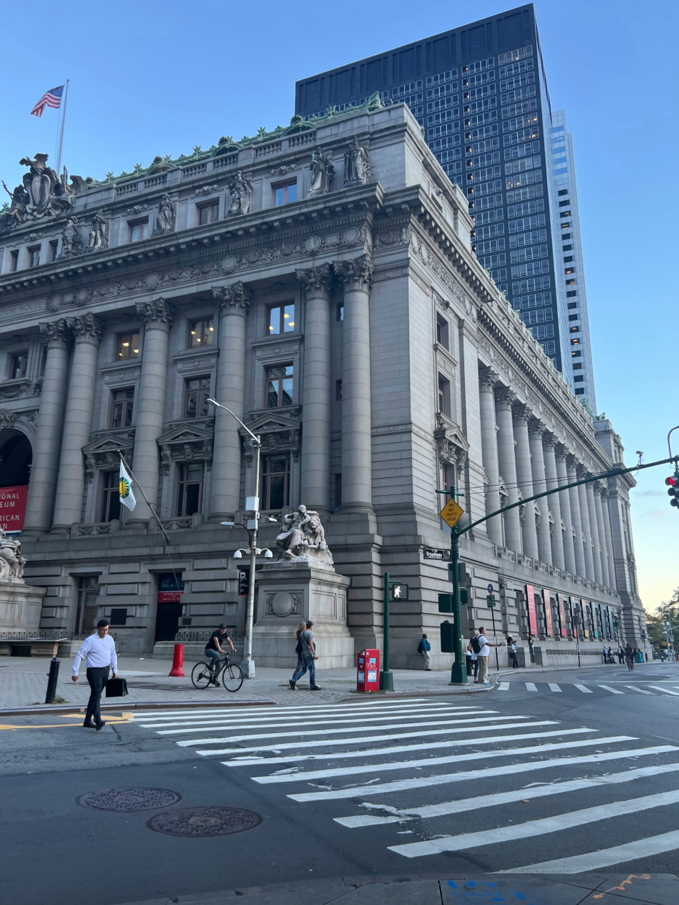
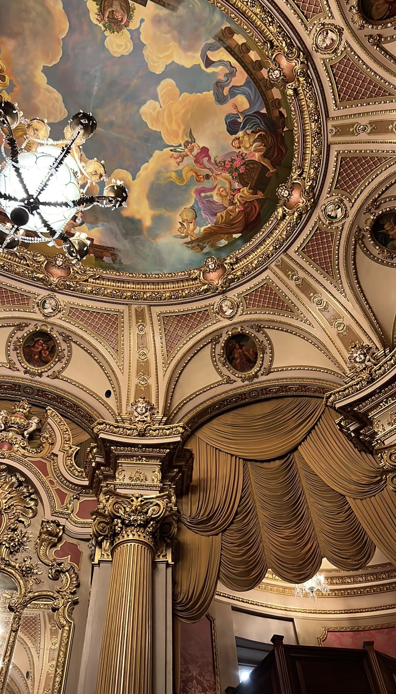

NEW YORK 2022 VS. IN THE FUTURE
- How does NYC look in the future?
- How has transportation in NYC evolved since the present day?
- What are the most significant changes in infrastructure and architecture?
- How has the cultural landscape of NYC transformed over time?
- What are the prevailing trends in food, fashion, and entertainment?
- How has technology influenced daily life in NYC?
- What are the emerging industries and job opportunities in the city?
- What are the aspirations and dreams of New Yorkers students for the future of their city?








Take a look at NYC in 2022. These are some of the pictures I took during my study away at NYU. It was my first time being out home for such a long time. New York did not only offer me the opporunity to study but to get to know myself, and let me tell that it was a hard process in such a big city